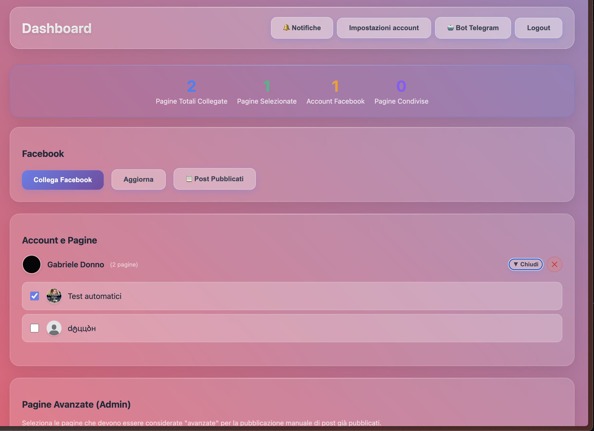
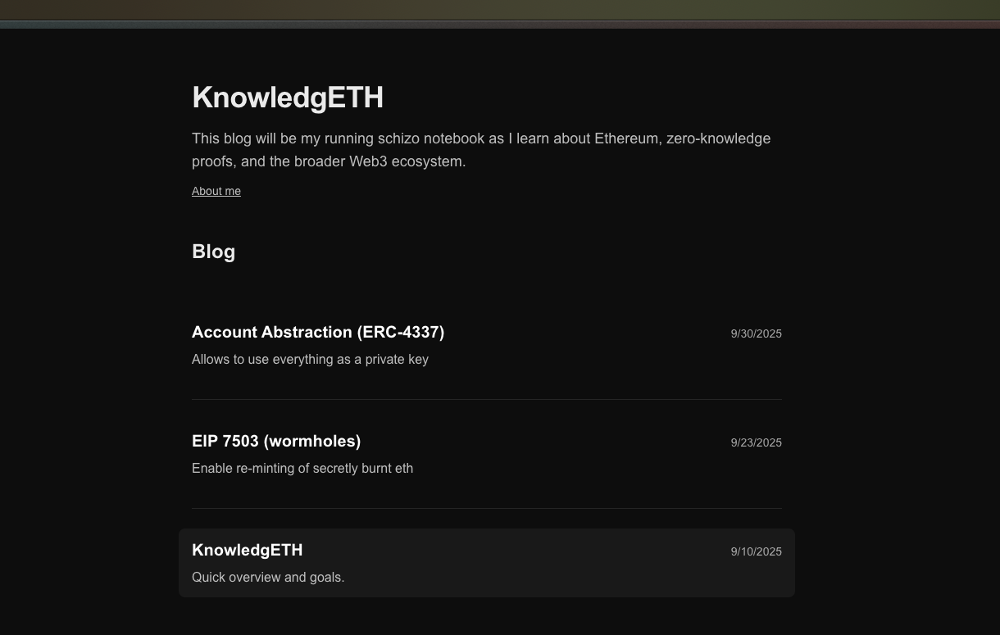
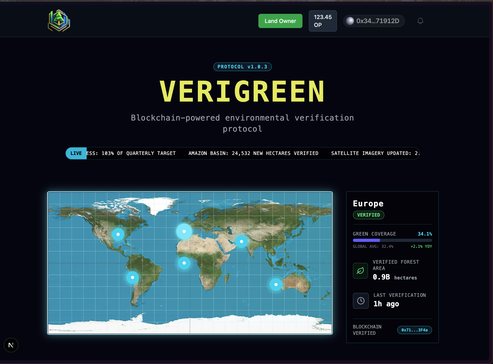
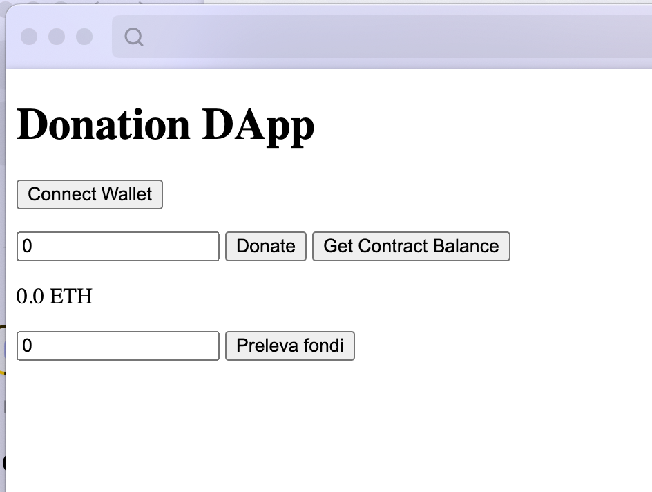

Passionate and motivated developer with a background in computer science. I build full-stack web applications, automate workflows, and ship products for real clients. Currently expanding into AI — training models on real business data to cut costs and solve concrete operational problems.
I'm a passionate and motivated developer with a strong foundation in computer science. My journey began with web development using HTML, CSS, and WordPress. Over time, I expanded my skill learning about ethical hacking and webApp development, which has given me a well-rounded understanding of technology.
Currently focused on advancing my knowledge in blockchain, smart contracts, and cryptographic protocols, with the goal of deeply understand blockchains technologies and ethereum.
Beyond coding, I'm enthusiastic about astronomy and physics, which fuel my curious and analytical mindset. These interests complement my technical skills by enhancing my problem-solving abilities and attention to detail.
I'm also a committed bodybuilder with over 3 years of training experience, which has instilled in me discipline, perseverance, and a goal-oriented approach that I apply to all aspects of my life, including my professional career.
Studying the mechanics and design of prediction markets — how they aggregate information, how liquidity and incentives work, and what makes them accurate. Writing an in-depth article on the topic.
Completing Stanford University's AI program to build a structured foundation in artificial intelligence and machine learning. The goal is to train models on real company data to solve concrete business problems — reducing training costs, automating repetitive processes, and delivering measurable ROI to businesses.
In talks with a new client about a custom application. Scoping requirements and evaluating the best technical approach ahead of an upcoming discovery call.
Self-Employed (Partita IVA)
Designed, built, and shipped full-stack web applications as an independent contractor. Delivered a complete SaaS product to a private client — a multi-account Facebook automation platform with admin dashboard, scheduling, and UTM tracking — successfully sold and handed off. Managed the entire product lifecycle end-to-end: from requirements to deployment and post-launch support.
News Distribution Manager
Managed news distribution via Facebook and PostPickr, optimizing content delivery and engagement strategies.
IT Technician Intern (3 months)
Provided technical support and assisted with IT infrastructure maintenance, gaining hands-on experience in a professional environment.

A WebApp that can handle multiple facebook account with different utm's for each page, it handles creation of accounts, login, admin dashboard. Created for a private client, it enables centralized automated posting and scheduling on multiple Facebook pages. Developed the entire app alone using React, javascript, and a PostgreSQL database. Hosted on Render.

Blog of notes where I explain web3 concepts as i research them, turning my learning process into accessible, easy to read content for a broader audience.
Link:
here

This project was created for the ETHGlobal Hackathon.
The project is a web application that enables transparent climate verification and incentivization, using satellite data and blockchain technology.
A functional demo is available, using mocked data. See the repository for details.
Live demo:
here
Repository:
here
PythNetwork Entropy winner

Did a little project trying to learn deeply solidity and the foundry framework. The project is a donation tracker that allows you to donate to the contract and track the donations made. The donator can withdraw only after 30 days from the donation. The owner can withdraw the donations at any time.